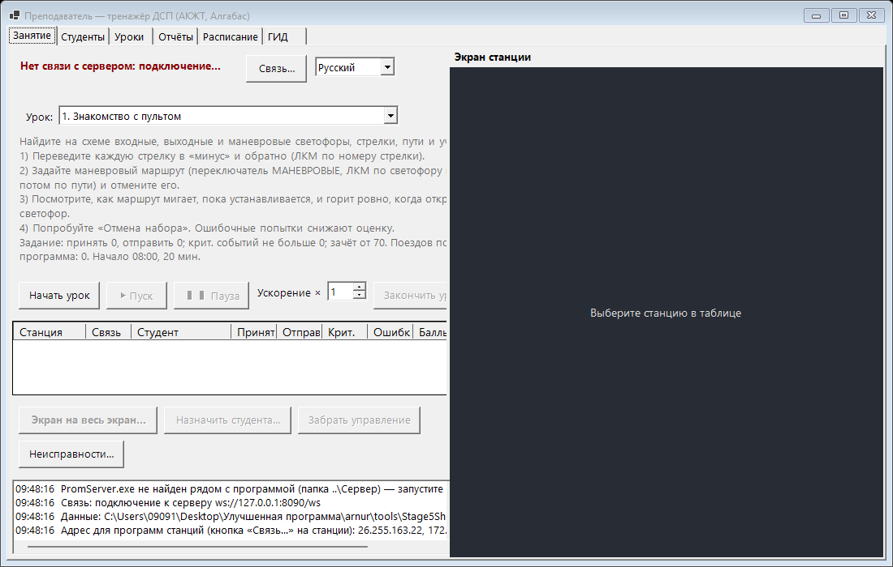
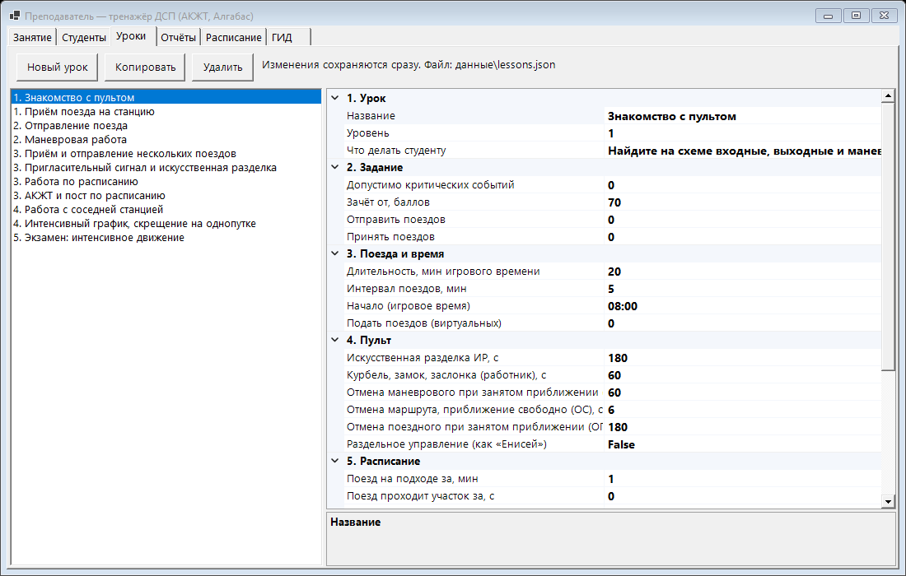
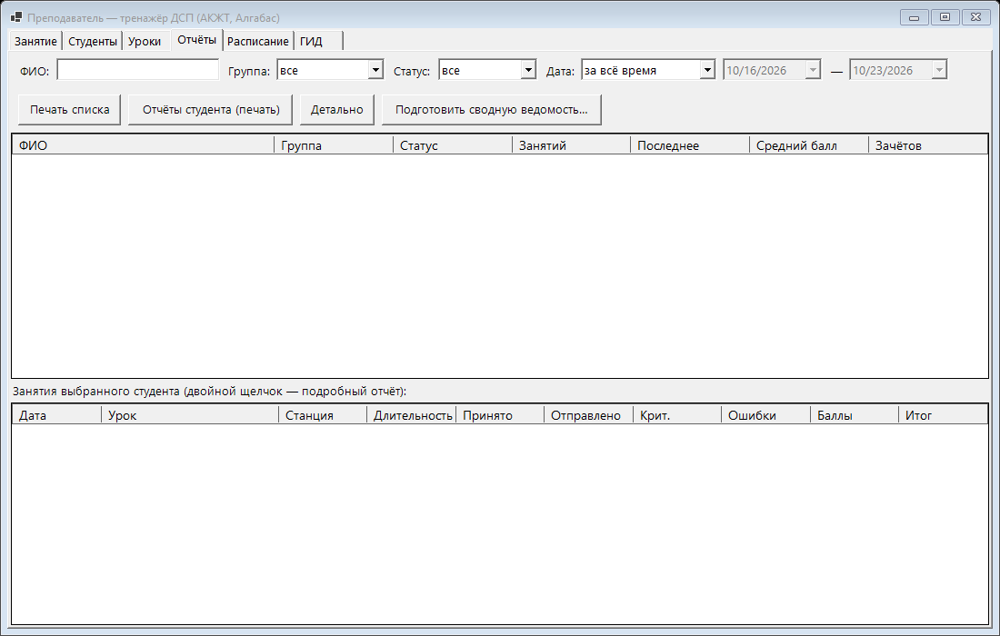

Инструкция преподавателя
Как подготовить класс, провести деловую игру, задать неисправности и посмотреть результаты.
1. Что в комплекте
| Папка | Что это |
|---|---|
Преподаватель\Teacher.exe | Программа преподавателя. Сама запускает сервер связи. Данные (студенты, уроки, результаты) — в папке Преподаватель\данные. |
АКЖТ\Station.exe | Пульт станции АКЖТ и путевого поста (одно окно на два монитора). Папка Arduino — прошивки макета. |
Алгабас\Algabas.exe | Пульт станции Алгабас. датчики.txt — какой датчик макета к какому участку. Папка Arduino — скетч. |
Сервер\PromServer.exe | Сервер связи (порт 8090). Вручную запускать не нужно. |
Инструкции | Эти инструкции (студент, преподаватель, программист) на трёх языках. |
Установка не нужна: всё внутри exe. Папку готовая_программа можно переносить на флешке целиком. Windows 10 / 11, компьютеры в одной сети.
2. Подготовка класса
- На компьютере преподавателя запустите
Преподаватель\Teacher.exe. Windows спросит про брандмауэр для PromServer — разрешите в частных сетях. В журнале внизу появится адрес для станций (например192.168.8.27). - На компьютерах студентов запустите АКЖТ или Алгабас → Связь… → адрес преподавателя → Подключить. Адрес запоминается.
- Станция появится в таблице на вкладке «Занятие». АКЖТ и Алгабас на связи друг с другом — поезда переходят между станциями сами.
- Если работаете с макетом — на станции выберите порт Arduino в списке вверху (см. раздел 11).

3. Студенты
Вкладка «Студенты»: Добавить… (ФИО, группа, пароль — можно пустой), Изменить…, Пароль…, Удалить. Студент входит на станции кнопкой «Вход» и выбирает себя. Если разрешена регистрация, студент может добавить себя сам («Меня нет в списке…»).
4. Уроки
Вкладка «Уроки»: список уроков слева, свойства справа. Новый урок, Копировать, Удалить. Изменения сохраняются сразу.

| Раздел | Свойства |
|---|---|
| 1. Урок | Название, уровень (1 — начинающие … 5 — экзамен), что делать студенту (видно у студента по кнопке «Задание»). |
| 2. Задание | Принять / отправить поездов, допустимо критических событий, зачёт от … баллов. |
| 3. Поезда и время | Сколько виртуальных поездов подать и с каким интервалом, длительность (игровые минуты), начало (игровое время). |
| 4. Пульт | Выдержки отмены маршрута (ОС, ОП, ОМ), искусственной разделки, работ монтёра; раздельное управление. |
| 5. Расписание | Расписание урока (вкладка «Расписание»), за сколько минут поезд появляется на подходе, скорость поездов (с на участок; для расписания — 12). |
| 6. Маневры и ПНП | План: подать / убрать вагонов на ПНП, отправить местных; местных вагонов в грузовом поезде; минут погрузки на вагон; подход и работы восстановительного поезда. |
Готовые уроки — от «Знакомства с пультом» до «Экзамена»; есть уроки на расписание, «Журналы, бланки, радиосвязь», «Маневровая работа и ПНП», «Сход и восстановительный поезд».
5. Проведение занятия
- Вкладка «Занятие»: выберите урок → Начать урок. Станции получают урок, пульты сбрасываются, счётчики обнуляются.
- Студенты входят («Вход»). Посадить студента за станцию вручную — Назначить студента….
- ▶ Пуск — игровое время идёт; ❚❚ Пауза — стоит (пульты не принимают команды); «Ускорение ×1…×10» — для всех станций.
- В таблице станций видно: студент, принято / отправлено, критические, ошибки, баллы — обновляется само.
- Закончить урок — станции присылают результаты, они сохраняются на вкладке «Отчёты».
6. Экран студента и управление
- Щёлкните станцию в таблице — справа её экран.
- Крупно: двойной клик по станции или Экран на весь экран… — отдельное окно на весь экран, F11 — без рамки. У АКЖТ кнопки «АКЖТ» / «Путевой пост» показывают одну схему во весь экран, «Всё окно» — целиком.
- Забрать управление — ваша мышь и клавиатура управляют пультом студента, у студента пульт не реагирует. «Вернуть управление студенту» — обратно.
7. Неисправности (экспресс-вводные)
Во время урока: выберите станцию → Неисправности… → «Экспресс-вводная…»: объект (светофор, стрелка, участок, перегон, поезд) → вид неисправности → условие (нет / состояние / переход в состояние / из состояния; для поезда — любой, по номеру, поездной, маневровый, пассажирский, грузовой) → начало (сразу или с игрового времени) → «Принять». В списке видно состояние: ждёт условия, действует, устраняет ШН, устранена. «Снять неисправность» — устранить самому.
| Неисправность | Чему учит |
|---|---|
| Светофор не открывается / перекрылся | Пригласительный сигнал, приказ «Указание», бланк ДУ-54 на выходном; запись в ДУ-46, вызов ШН. |
| Стрелка: нет контроля, не переводится, отжим, взрез | Курбель, закладка и замок, выключение с сохранением сигналов, макет; ДУ-46. |
| Ложная занятость / свободность участка, перегона | Вспомогательный перевод (ВК), ИР, вспомогательная смена направления, телефонные средства связи (ДУ-47, ДУ-50). |
| Направление не меняется | ВСН, переход на телефонные средства связи. |
| Поезд: двигатель, тормоза, негабарит, сход | Радиосвязь («Ремонт»), сообщение ДНЦ, восстановительный поезд, предупреждение. |
Студент неисправность надписью не видит — только то, что видел бы дежурный. Об отказах поезда сообщает машинист.
8. Расписание и ГИД
- Вкладка «Расписание»: учебные расписания (три готовых). Строка — поезд: номер (чётный идёт АКЖТ → пост → Алгабас), категория, откуда, время по пунктам, путь по ТРА. Ошибки и нормативный график — внизу.
- Урок с расписанием: «Уроки» → «5. Расписание». Поезда появляются сами, у студента — кнопка «Расписание».
- Вкладка «ГИД»: нитки поездов текущего урока строятся сами, нормативный график — пунктиром. Колесо — масштаб, перетаскивание — прокрутка. Внизу — техническая и участковая скорость.
9. Отчёты и ведомость

- Фильтры: ФИО, группа, статус, даты. Выберите студента — внизу его занятия; двойной щелчок по занятию или Детально — подробный отчёт (открывается в браузере, печать Ctrl+P).
- В подробном отчёте: итог и оценка, критические события и ошибки, неисправности, журнал ДУ-46, журналы ДУ-2 / ДУ-47 / ДУ-58 / ДУ-60, бланки, предупреждения, радиосвязь, автопроверка журналов (что совпало с фактом, что нет — окончательно решаете вы), маневровая работа и журнал ПНП, восстановительный поезд, ГИД, журнал действий.
- Отчёты студента (печать), Печать списка, Подготовить сводную ведомость… (руководитель занятий, печать, файл для Excel).
10. Как оценивается студент
100 баллов минус штрафы. Зачёт — баллов не меньше порога урока и критических событий не больше допустимого. Полная таблица штрафов — в инструкции студента. Главное:
- Критические (−20): задержка поезда у закрытого входного больше 3 мин, взрез стрелки, опоздание по расписанию больше 5 мин, незакреплённые вагоны, второй локомотив на ПНП.
- Неисправность не записана в ДУ-46 или не сообщено ШН / ДНЦ / ПД — по −5. Невыполненное задание — −10 за поезд. Журналы не совпадают с фактом — −2 (по журналу не больше −10).
11. Макет (Arduino)
- Программы работают и с макетом, и без него. На станции вверху — список портов: выберите порт Arduino. Строка «Датчики» показывает, что присылает плата.
- АКЖТ: прошивка
АКЖТ\Arduino\StationMain_AKZHT, инструкция —АКЖТ\Arduino\ИНСТРУКЦИЯ.txt. - Алгабас: скетч
Алгабас\Arduino\StationMain(22.10.2026: стрелки на разъёмах шилда 0–4). Какой датчик к какому участку —Алгабас\датчики.txt(меняется без пересборки программы). - Настоящий поезд на макете станция видит как занятость участков. Номер ему студент присваивает сам (ПКМ по участку → «Номер поезда на макете…»).
12. Языки
Список «Русский / Қазақша / English» — рядом с «Связь…». Ваш язык уходит на все станции; студент может переключить у себя. Отчёты и ведомость печатаются на вашем языке. Названия станций, светофоров и то, что вводите вы (ФИО, названия уроков), не переводятся.
13. Неполадки
- Станция не появляется в таблице.
- Проверьте адрес в «Связь…» на станции, брандмауэр Windows на ПК преподавателя (PromServer, частная сеть), что компьютеры в одной сети.
- Сервер не запускается.
- На этом компьютере уже работает другой сервер (второй Teacher.exe или PromServer.exe): закройте лишний.
- Студент не может войти.
- Добавьте его на вкладке «Студенты» или сбросьте пароль («Пароль…»).
- Результат не пришёл.
- Станция была не на связи, когда вы закончили урок. Не закрывайте программы станций, пока в таблице не появится «результат получен».
- Макет не отвечает.
- Выберите правильный порт; для АКЖТ — см.
ИНСТРУКЦИЯ.txtв папке Arduino.